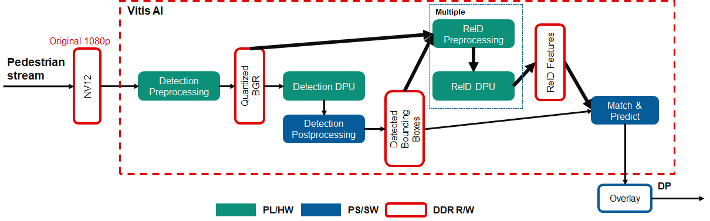

Kria™ KV260 Vision AI Starter Kit AIBox-ReID Tutorial |
Software Architecture of the Accelerator |
Software Architecture of the Accelerator¶
Introduction¶
This document describes the software architecture of the AiBox-ReID application.
Software Platform and Dependencies¶
We leverage the GStreamer multi-media orchestration platform for application software development. As described in following sections about GStreamer pipeline, all the processing units in the stream pipeline are presented to the user as easily pluggable and changeable plugins, enabling a “low touch” customer adaptation of the reference design pipeline within the context of an open-source and non-vendor specific implementation.
Vitis AI 2.5.0 is the core underlying component to access the AI inference capability provided by Xilinx DPU.
To access DPU and other PL hardware accelerator functions from GStreamer, Xilinx developed Vitis Video Analysis SDK (VVAS) to provide convinient and customizable GStreamer plugins for it.
GStreamer Pipeline¶

The AIBox-ReID application accepts up to 4 channels of RTSP streams (1080p, H264/H265), decodes them to NV12 frame buffers, then performs pedestrian detection on all four streams using the AI inference accelerator (DPU). Next, ReID and tracking are performed to give the detected pedestrians a unique ID. Finally, bounding boxes and ID text are rendered over the original video frames and displayed on a 4K monitor in a 2x2 grid.
Following the datapath in the figure above, decoded NV12 buffers are first pre-processed to prepare the buffer for ingestion by the pedestrian detection model in DPU. This includes color space conversion and resize operations. The DPU then performs the inferencing whose results are post-processed to determine the size and location of the bounding box around each pedestrian. The bounding box information is then used to crop the region of interest for the detected person and again pre-processed for use by the ReID model in DPU. The DPU then outputs the ReID features and coordinates for each detected person. Matching and tracking are performed to give each person the final ID.
The figure below shows the GStreamer pipeline used in this application. There are 5 main components described below: Pedestrian Pre-processing, Pedestrian Detection, ReID Pre-Processing, ReID and Tracking, and Rendering.

Pedestrian Preprocess
The pedestrian detection model requires downscaled BGR frames so the received decoded NV12 frames need to be pre-processed to do color space conversion and resizing. For best performance, these steps are performed using a dedicated pre-processing hardware accelerator IP, as described in the Hardware Accelerator Architecture
NV12 to BGR conversion and image resizing, are to meet the requirement of the DPU AI inference engine. These steps are done in one dedicate preprocessing IP, which is detailed in the Accelerator IP Modules, to achieve the optimal framerate and latency.
vvas_xmultisrc GStreamer plugin from VVAS with customized kernel /opt/xilinx/kv260-aibox-reid/lib/libvvas_pedpp.so are used to integrate the accelerator IP functionality into the pipeline.
Configuration file: /opt/xilinx/kv260-aibox-reid/share/vvas/ped_pp.json, contains the PL kernel and software kernel library info, which will do the colour conversion and resize.
{
"kernel-name": "pp_pipeline_accel:pp_pipeline_accel_1",
"library-name": "libvvas_pedpp.so",
"config": {
"debug_level" : 0,
"mean_r": 0,
"mean_g": 0,
"mean_b": 0,
"scale_r": 1,
"scale_g": 1,
"scale_b": 1
}
}
Pedestrian Detection
vvas_xfilter GStreamer plugin with kernel library /usr/lib/libvvas_dpuinfer.so works as middleware between the application which interfaces with user and underlying Vitis AI library. The Vitis AI library then interfaces with DPU to feed the actual AI inference tasks.
Configuration file: /opt/xilinx/kv260-aibox-reid/share/vvas/refinedet.json, contains the actual model info we will run in this plugin.
"config": {
"model-name" : "refinedet_pruned_0_96",
"model-class" : "REFINEDET",
"model-path" : "/opt/xilinx/kv260-aibox-reid/share/vitis_ai_library/models/",
"run_time_model" : false,
"need_preprocess" : true,
"performance_test" : false,
"debug_level" : 0
}
ReID Preprocess
vvas_xfilter GStreamer plugin with kernel library /opt/xilinx/kv260-aibox-reid/lib/libvvas_crop.so will do the crop and resize on the input BGR image from previous pedestrian detection, based on the bbox info contained in the inference meta data, and attach the preprocessed images to the incoming inference meta data which will be passed down.
Configuration file: /opt/xilinx/kv260-aibox-reid/share/vvas/crop.json.
ReID + Tracking
vvas_xfilter GStreamer plugin with kernel library /opt/xilinx/lib/libvvas_reid.so will run ReID on the incoming pedestrian images, get the ReID features, together with the coordinates of each person, the tracking algorithm will give each person an unique ID. Also this info will be attached to the inference meta data to be consumed later.
Configuration file: /opt/xilinx/kv260-aibox-reid/share/vvas/reid.json.
AI Rendering
vvas_xfilter GStreamer plugin with kernel library /opt/xilinx/lib/libvvas_drawreid.so will just draw the bounding box and ID for each detected person.
Configuration file: /opt/xilinx/kv260-aibox-reid/share/vvas/draw_reid.json.
Additional GStreamer component used:¶
The rtspsrc and omxh264dec are the standard GStreamer plugin which accept the RTSP stream and decode to NV12.
Next Step¶
You can choose any of the following next steps:
Go back to the KV260 AI Box design start page
License¶
Licensed under the Apache License, Version 2.0 (the “License”); you may not use this file except in compliance with the License.
You may obtain a copy of the License at http://www.apache.org/licenses/LICENSE-2.0
Unless required by applicable law or agreed to in writing, software distributed under the License is distributed on an “AS IS” BASIS, WITHOUT WARRANTIES OR CONDITIONS OF ANY KIND, either express or implied. See the License for the specific language governing permissions and limitations under the License.
Copyright© 2021 Xilinx